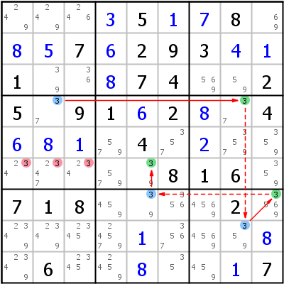

HoDoKu Solving Technique Index: Example for "X-Chain"

Original sudoku:
....5..8...7.293..1...74..25.91.2..4....4.........816.718....2...........6......7
Use the following line if you want to load the sudoku in HoDoKu:
:0701:3:...+35+1+78.+8+57+6293+4+11..+874..25.91+62+8.4+6+8+1.4.+2.......816.718....2.....+1...+8.6..+8..+17::361 362 363:
The following representation can be pasted in most Sudoku programs:
.------------------.-----------------.------------------. | 249 249 246 | 3 5 1 | 7 8 69 | | 8 5 7 | 6 2 9 | 3 4 1 | | 1 39 36 | 8 7 4 | 569 59 2 | :------------------+-----------------+------------------: | 5 37 9 | 1 6 2 | 8 37 4 | | 6 8 1 | 579 4 357 | 2 3579 359 | | 234 2347 234 | 579 39 8 | 1 6 359 | :------------------+-----------------+------------------: | 7 1 8 | 459 39 356 | 4569 2 3569 | | 2349 2349 2345 | 24579 1 3567 | 4569 359 8 | | 2349 6 2345 | 2459 8 35 | 459 1 7 | '------------------'-----------------'------------------'
Representation of the step:
.--------------------.------------------.--------------------. | 249 249 246 | 3 5 1 | 7 8 69 | | 8 5 7 | 6 2 9 | 3 4 1 | | 1 39 36 | 8 7 4 | 569 59 2 | :--------------------+------------------+--------------------: | 5 *37 9 | 1 6 2 | 8 *37 4 | | 6 8 1 | 579 4 357 | 2 3579 359 | | 2-34 2-347 2-34 | 579 *39 8 | 1 6 359 | :--------------------+------------------+--------------------: | 7 1 8 | 459 *39 356 | 4569 2 *3569 | | 2349 2349 2345 | 24579 1 3567 | 4569 *359 8 | | 2349 6 2345 | 2459 8 35 | 459 1 7 | '--------------------'------------------'--------------------' X-Chain: 3 r4c2 =3= r4c8 -3- r8c8 =3= r7c9 -3- r7c5 =3= r6c5 => r6c123<>3
Copyright © 2008-12 by Bernhard Hobiger
Last modified on May 5, 2025 by shorty#3746
(based of the 1to9only Github repo)
All material on this page is licensed under the GNU FDLv1.3.